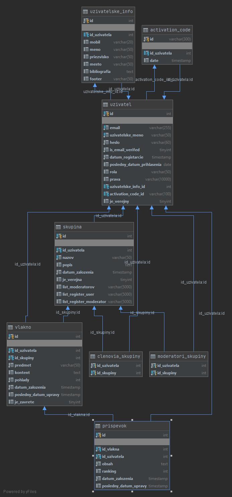

Socialna sieť: diskusie v diskusných skupinách
- Autori
- Maroš Geffert
xgeffe00@stud.fit.vutbr.cz -
security, controllers, views
- Patrik Tomov
xtomov02@stud.fit.vutbr.cz -
tvorba databázy, services, hosting
- Tomáš Lisický
xlisic01@stud.fit.vutbr.cz -
controllers, views,
- URL aplikace
- www.open-forum.xzy
- open-forum.xzy
Uživatelia systému pre testovanie
Uveďte prosím existující zástupce všech rolí uživatelů.
| Login | Heslo | Role |
|---|
| admin | admin | Administrátor |
| Maros11 | 1234 | USER(Zakladateľ skupiny IMA) |
| Patres22 | 1234 | USER(Moderátor skupiny IMA) |
| Adam44 | 1234 | USER(Člen skupiny IMA) |
(Diagram případů užití není nutné vkládat, pokud IS implementuje role a případy užití definované zadáním.)
Implementace
Stručná dokumentace k implementaci, která popisuje, které části projektu (např. PHP skripty) implementují jednotlivé případy použití.
Všetky prípady použitia sú implementované v časti projektu CONTROLLER.
MyProfileController a UserController - slúžia na editovanie, mazanie, nastavovanie súkromia učtu
TopicController - pridávať, mazať a editovať vlákna
SectionController - umožňuje mazať, pridávať skupiny a príspevky, pridávať/mazať uživateľov/moderátorov, registrovať sa do skupín, požiadať o moderátora
UserCreationRestController - umožňuje vytvárať uživateľov
Databáza

Inštalácia
Stručně popište: